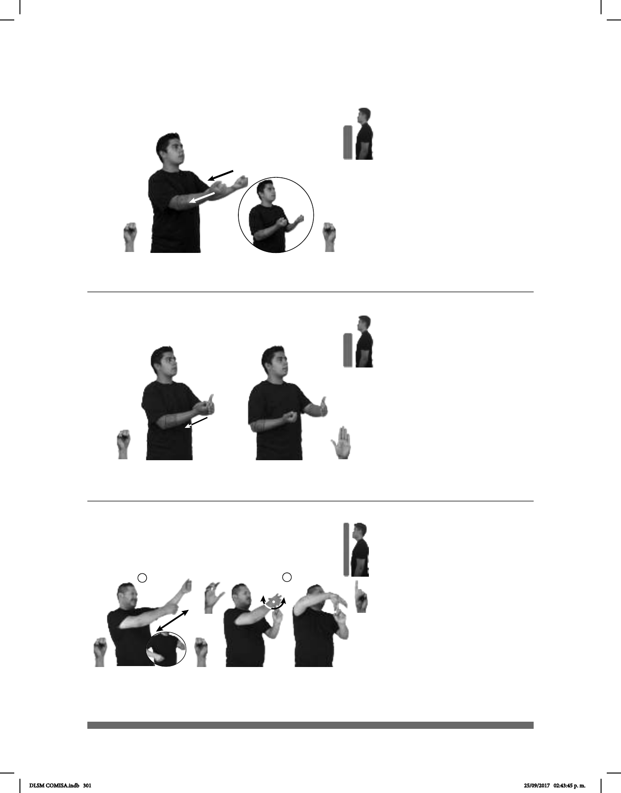

301
1
2
Seña: SC: I. SS, II. SB
-
ción 1.1
I. Palmas hacia dentro; II. MD palma
hacia abajo. MB palma hacia la derecha.
I. Del hombro a la cintura del lado derecho
al izquierdo; II. A la altura del pecho. MD sobre MB.
I. Recto de adelante hacia atrás; II. La
MD se mueve formando un arco hacia adelante y hacia
atrás repetidamente.
sust. f. Instrumento sonoro de gran
tamaño, hueco, generalmente de algún metal como el
bronce, de forma cónica, abierto en la base y cerrado
en su parte superior. Cuando se lo golpea con el bada-
jo, con un mazo o con un martillo, produce un sonido
característico como el que se oye en las iglesias para
Seña: SB
MD S.1, MB B-P.2
MD palma hacia arriba. MB
palma oblicua hacia la derecha y hacia
dentro.
A la altura del pecho, MD detrás
de MB.
MD recto hacia atrás.
Simula la acción de abrir
un cajón con una mano.
sust. m. Parte de algunos
muebles, con forma de caja que puede
abrirse y cerrarse deslizándose sobre un riel
y que sirve para guardar cosas.
(S-24)
(S-23)
____muy
IGLESIA CAMPANA GRANDE
En la iglesia hay una campana muy grande.
CAJÓN
adentro
HOJAS BLANCAS HAY
Hay hojas blancas en el cajón.
Seña: SS
S.1
Palmas hacia arriba.
A la altura del pecho.
Recto hacia atrás.
sust. m. Parte de
algunos muebles con forma de caja
que puede abrirse y cerrarse
deslizándose sobre un riel y que
sirve para guardar cosas.
(S-22)
CAJÓN
adentro
HOJAS BLANCAS HAY
Hay hojas blancas en el cajón.
DLSM COMISA.indb 301 25/09/2017 02:43:45 p. m.